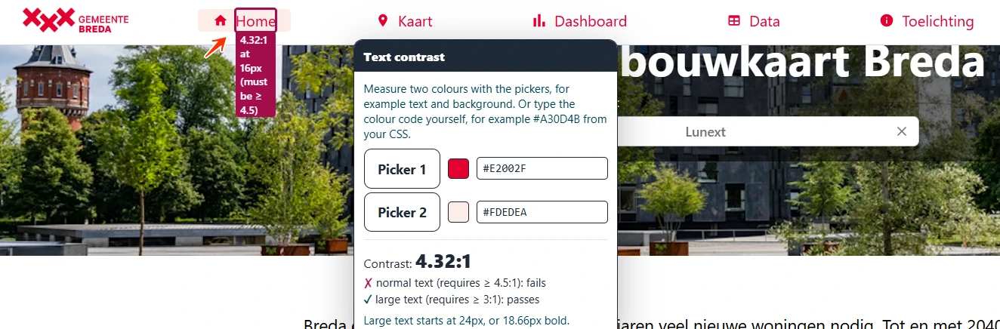
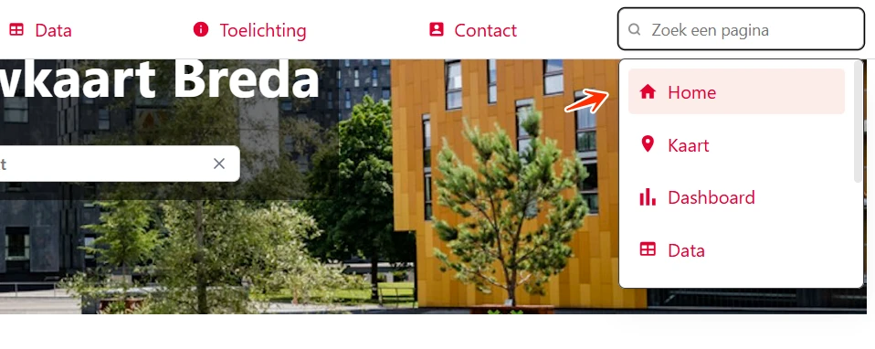

#1 - Tekst heeft te weinig contrast

De actieve link in het hoofdmenu, bijvoorbeeld "Home", heeft een lichtrode achtergrond (#FDEDEA). De tekstkleur is rood (#E2002F). Het contrast is te laag: 4,3:1. Niet alle bezoekers kunnen deze tekst lezen.
Hetzelfde zie je in de lijst met zoeksuggesties van het zoekveld "Zoek een pagina" in de header, als een suggestie de toetsenbordfocus krijgt of als de muis erop staat. Ook op de pagina https://breda.shintolabs.net/dashboard komt dit voor: in de keuzelijsten in het zijmenu, bijvoorbeeld "Woningtype", staat de gemarkeerde suggestie in rode tekst op een lichtrode achtergrond.
User story
Ik heb een visuele beperking. Als tekst te weinig contrast heeft met de achtergrond, kan ik hem moeilijk lezen. Ik verwacht dat tekst genoeg contrast heeft om hem makkelijk te lezen.
Hoe te testen
Open de WCAG Radar en zet de optie "Contrast" aan. Tekst op een effen achtergrond met te weinig contrast wordt automatisch gemarkeerd. Voor tekst op een foto of verloop meet je met de twee pipetten de kleur van de tekst en van de achtergrond. De ondergrens is 4,5:1 voor normale tekst en 3,0:1 voor grote tekst (vanaf 24 px normaal of 18,7 px vet).
Oplossing
Deze tekst is normaal en kleiner dan 24 px. Het contrast moet daarom minimaal 4,5:1 zijn.
#2 - Actieve link is alleen aan de kleur te herkennen
In het hoofdmenu is de actieve link (de link naar de huidige pagina), bijvoorbeeld "Home", alleen te herkennen aan een andere achtergrondkleur. Bezoekers die slecht zien of kleurenblind zijn, zien dat kleurverschil misschien niet. Een actieve link moet ook te herkennen zijn aan een kenmerk dat geen kleur is.
User story
Ik kan kleuren niet goed onderscheiden. Als ik naar het menu kijk, zie ik niet welke link actief is, omdat alleen de kleur verandert. Ik verwacht dat een actieve link ook opvalt door een onderstreping of vette tekst.
Hoe te testen
Bekijk de pagina in grijstinten: open de WCAG Radar en zet de optie "Grijstinten" aan. Elk element dat met kleur informatie geeft, heeft een tweede kenmerk nodig: tekst, een icoon, een onderstreping of een patroon.
Oplossing
Onderstreep de actieve link of maak hem vet, zodat hij ook zonder kleur te herkennen is.
#3 - Eigen focusindicator heeft te weinig contrast
In het hoofdmenu staat het zoekveld "Zoek een pagina", dat zoeksuggesties toont. Als je met het toetsenbord door de suggesties gaat, is de focusindicator een lichtrode achtergrond (#FDEDEA) op de witte achtergrond van de lijst. Het contrast tussen deze kleuren is 1,1:1. Dat is lager dan de ondergrens van 3,0:1. Een eigen focusindicator moet aan de contrasteis voldoen, de standaard focusindicator van de browser niet. Bezoekers kunnen een eigen focusindicator niet aanpassen.
User story
Ik gebruik de website met een toetsenbord en ik heb een visuele beperking. Als ik door de pagina ga, zie ik niet goed welk element de focus heeft. Ik verwacht dat de focusindicator goed afsteekt tegen de achtergrond.
Hoe te testen
Zet de focus in het zoekveld en druk op Pijl omlaag om door de suggesties te gaan. Meet het contrast van de focusindicator met de achtergrond ernaast, met de Colour Contrast Analyser of met de optie "Contrast" van de WCAG Radar. De ondergrens is 3,0:1.
Oplossing
Pas de kleur van de focusindicator op de zoeksuggesties aan, zodat het contrast met de witte achtergrond minimaal 3,0:1 is. Zorg dat de focusindicator goed zichtbaar blijft als je met het toetsenbord van suggestie naar suggestie gaat.
#4 - Toetsenbordfocus is alleen aan de kleur te herkennen

In het hoofdmenu staat het zoekveld "Zoek een pagina", dat zoeksuggesties toont. Als je met het toetsenbord door de suggesties gaat, is de focus alleen te zien aan een lichtrode achtergrond. Bezoekers die slecht zien of kleurenblind zijn, zien niet welke suggestie de focus heeft.
User story
Ik kan kleuren niet goed onderscheiden. Als ik door de pagina ga, zie ik niet goed welk element de focus heeft. Ik verwacht dat de focusindicator meer is dan een andere kleur.
Hoe te testen
Bekijk de pagina in grijstinten: open de WCAG Radar en zet de optie "Grijstinten" aan. Kijk of de focusindicator zonder kleur nog opvalt. Hij heeft een tweede kenmerk nodig: tekst, een icoon, een onderstreping of een patroon.
Oplossing
Geef de toetsenbordfocus naast de kleur een tweede kenmerk, bijvoorbeeld een onderstreping, een rand of een icoon. Je kunt ook de standaard focusrand van de browser gebruiken.